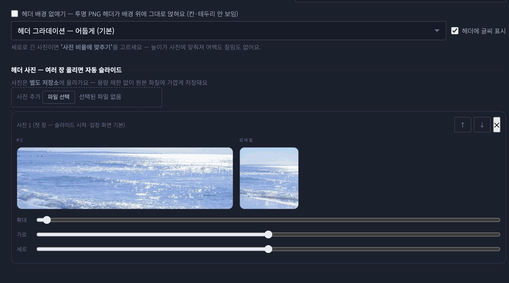
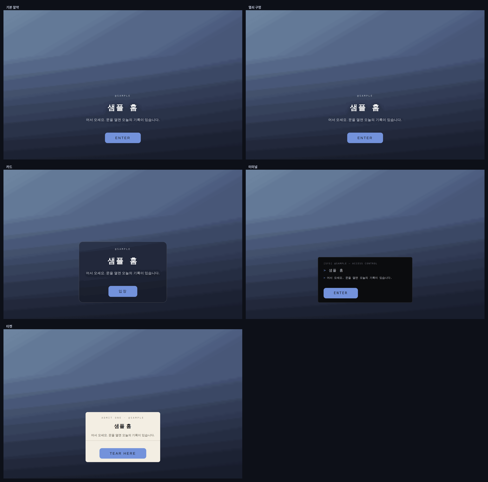

러브로그 · 꾸미기
기본 정보
이름과 라벨
홈 이름·부제(엔터로 줄 나눔), 헤더 위 작은 라벨(도형과 글자 따로 — 기본은 ◈ @핸들), 파비콘(정사각 PNG 권장), 앱 아이콘(폰 홈 화면 추가 때 — 대문·헤더 사진 / 직접 올린 사진 / 기본 하트), 러브인포 핸들(적으면 오른쪽 위에 LUVINFO 링크).
헤더 사진
- 여러 장이면 자동 슬라이드. 크롭해서 올릴 필요 없이 사진마다 확대(100~250%)·가로·세로 슬라이더로 보여줄 부분을 정하고, PC·모바일 미리보기가 나란히 뜹니다.
- ↑↓로 순서(첫 장이 슬라이드 시작이자 입장 화면 기본). 헤더 글씨 끄기, 그라데이션(어둡게/밝게/없음), 높이·채우기 — 세로로 긴 사진은 「사진 비율에 맞추기」.

사진 자리img/ll-basic-header.png입장 화면(대문)
- 첫 방문자에게 보이는 대문. 사진·움짤·짧은 영상(mp4·webm, 15MB) 배경.
- 문구·비밀번호([잠금 해제하기]로 풀기)·입장 버튼 글자·글씨색·버튼색·그라데이션 끄기. [대문 미리보기]로 확인(아무 데나 클릭·ESC로 나옴).
- 「대문 끄기」를 켜면 방문자가 입장 화면 없이 바로 홈으로 들어옵니다. 비밀번호를 걸어둔 홈은 켜도 대문이 뜹니다.
- 🔗 글 링크로 오면 대문 건너뛰기 — 글 링크로 바로 들어온 방문자는 대문 없이 글부터(비밀번호 대문엔 적용 안 됨).
- 대문 모양 5종(기본 알약·열쇠 구멍·카드·터미널·티켓)과 배치 7곳(아래 가운데·정중앙·위·네 구석).

사진 자리img/ll-basic-gate.png그 밖에
- 대표 이미지(정사각 — 이웃 위젯·홈 목록용)와 배너 이미지(가로형 — 남의 배너칸용)를 따로.
- 내 홈 공개하기 — 켜면 남이 나를 걸었을 때 내 이름·사진이 자동으로 뜹니다(기본 비공개).
- 이웃 전용 메모 🔒 — 맞배너인 분에게만 화면 오른쪽 위 🔒로 보이는 비밀 메모. 비밀글 비번 안내 등에.
- 💬 댓글 허용 범위 — 로그인한 누구나 / 서로 이웃만.
- 💛 반응 이모지 — 댓글·방명록의 ＋ 이모지 5개를 홈마다 변경. 이미 쌓인 숫자는 칸 순서를 따라가니 순서 변경은 신중하게.
- 문의·제보 — 운영자에게 바로 전달되고 답변도 같은 자리에서.